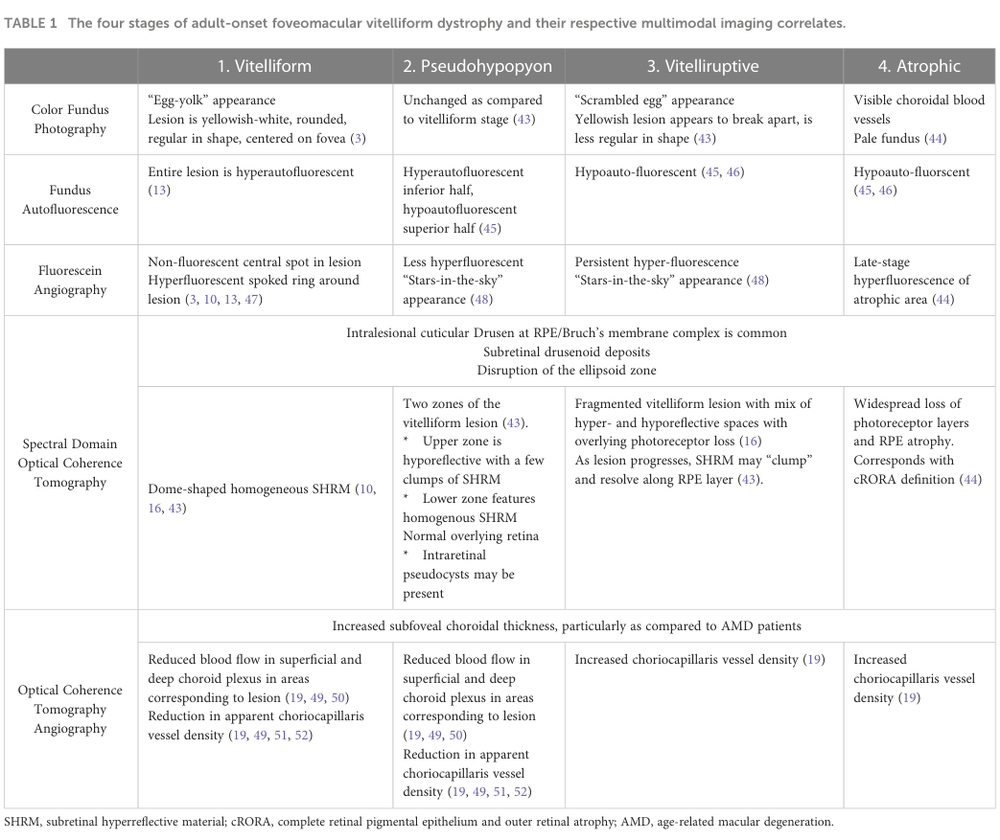

Adult-onset foveomacular vitelliform dystrophy (AVMD/AOFVD, also "pseudo-Best disease" or Gass disease) is a slowly progressive macular dystrophy presenting in mid-adulthood (fourth to sixth decade) with a small, bilateral, subfoveal yellow vitelliform (egg-yolk-like) lesion composed of lipofuscin accumulated at the photoreceptor outer-segment/retinal pigment epithelium (RPE) interface. Patients have mild central or paracentral visual loss, metamorphopsia, and a generally good prognosis, although gradual lesion resorption can lead to geographic atrophy or, less often, choroidal neovascularization. AVMD is genetically heterogeneous: a minority of cases carry heterozygous variants in PRPH2 (peripherin-2), BEST1 (bestrophin-1), IMPG1, or IMPG2, while many cases are non-Mendelian/idiopathic without an identifiable monogenic cause. It is distinguished from Best vitelliform macular dystrophy (BVMD) by its later onset, smaller lesions, normal-to-mildly-reduced electrooculogram (EOG), and milder course.
Ask a research question about Adult-Onset Foveomacular Vitelliform Dystrophy. OpenScientist will conduct autonomous deep research using the Disorder Mechanisms Knowledge Base and PubMed literature (typically 10-30 minutes).
Do not include personal health information in your question. Questions and results are cached in your browser's local storage.
name: Adult-Onset Foveomacular Vitelliform Dystrophy
creation_date: "2026-06-08T00:00:00Z"
category: Complex
description: >-
Adult-onset foveomacular vitelliform dystrophy (AVMD/AOFVD, also "pseudo-Best
disease" or Gass disease) is a slowly progressive macular dystrophy presenting
in mid-adulthood (fourth to sixth decade) with a small, bilateral, subfoveal
yellow vitelliform (egg-yolk-like) lesion composed of lipofuscin accumulated at
the photoreceptor outer-segment/retinal pigment epithelium (RPE) interface.
Patients have mild central or paracentral visual loss, metamorphopsia, and a
generally good prognosis, although gradual lesion resorption can lead to
geographic atrophy or, less often, choroidal neovascularization. AVMD is
genetically heterogeneous: a minority of cases carry heterozygous variants in
PRPH2 (peripherin-2), BEST1 (bestrophin-1), IMPG1, or IMPG2, while many cases
are non-Mendelian/idiopathic without an identifiable monogenic cause. It is
distinguished from Best vitelliform macular dystrophy (BVMD) by its later onset,
smaller lesions, normal-to-mildly-reduced electrooculogram (EOG), and milder
course.
disease_term:
preferred_term: adult-onset foveomacular vitelliform dystrophy
term:
id: MONDO:0011979
label: adult-onset foveomacular vitelliform dystrophy
synonyms:
- AVMD
- AOFVD
- AOFMD
- adult-onset vitelliform macular dystrophy
- pseudo-Best disease
- Gass disease
- pseudo-vitelliform macular dystrophy
parents:
- Ophthalmological Disease
- Retinal Dystrophy
- Inherited retinal dystrophy
notes: >-
AVMD overlaps clinically and genetically with the broader pattern-dystrophy and
vitelliform spectrum. MONDO places vitelliform macular dystrophy 1, 3 (PRPH2), 4
(IMPG1), and 5 (IMPG2) as direct children of MONDO:0011979. BEST1-related
adult-onset disease ("pseudo-Best"/adult-onset bestrophinopathy) is captured
here as a gene-defined subtype distinct from juvenile Best disease (BVMD), which
is modeled separately in BEST1_Bestrophinopathies.yaml.
has_subtypes:
- name: PRPH2-related
display_name: PRPH2-related AVMD (vitelliform macular dystrophy 3)
subtype_term:
preferred_term: vitelliform macular dystrophy 3
term:
id: MONDO:0024561
label: vitelliform macular dystrophy 3
description: >-
AVMD caused by heterozygous variants in PRPH2 (peripherin-2), a photoreceptor
outer-segment disc rim tetraspanin. Part of the broader PRPH2 pattern-dystrophy
spectrum.
genes:
- preferred_term: PRPH2
term:
id: hgnc:9942
label: PRPH2
inheritance:
- name: Autosomal dominant
inheritance_term:
preferred_term: Autosomal dominant inheritance
term:
id: HP:0000006
label: Autosomal dominant inheritance
evidence:
- reference: PMID:25681578
supports: SUPPORT
evidence_source: HUMAN_CLINICAL
snippet: "A minority of AFVD patients have a mutation in the PRPH2, BEST1, IMPG1, or IMPG2 genes."
explanation: >-
This authoritative review identifies PRPH2 as one of the recognized causal
genes for a minority of AFVD cases, supporting the PRPH2-related subtype.
- name: BEST1-related
display_name: BEST1-related AVMD (adult-onset bestrophinopathy / pseudo-Best)
description: >-
Adult-onset vitelliform lesions caused by heterozygous variants in BEST1
(bestrophin-1), an RPE basolateral calcium-activated chloride channel. Later
onset and milder than juvenile Best vitelliform macular dystrophy.
genes:
- preferred_term: BEST1
term:
id: hgnc:12703
label: BEST1
inheritance:
- name: Autosomal dominant
inheritance_term:
preferred_term: Autosomal dominant inheritance
term:
id: HP:0000006
label: Autosomal dominant inheritance
evidence:
- reference: PMID:25681578
supports: SUPPORT
evidence_source: HUMAN_CLINICAL
snippet: "A minority of AFVD patients have a mutation in the PRPH2, BEST1, IMPG1, or IMPG2 genes."
explanation: >-
BEST1 is one of the recognized causal genes for a minority of AFVD cases.
Adult-onset BEST1 disease is distinguished from juvenile Best disease by
its later onset and milder course.
- name: IMPG1-related
display_name: IMPG1-related AVMD (vitelliform macular dystrophy 4)
subtype_term:
preferred_term: vitelliform macular dystrophy 4
term:
id: MONDO:0014508
label: vitelliform macular dystrophy 4
description: >-
AVMD caused by variants in IMPG1 (interphotoreceptor matrix proteoglycan 1),
a component of the interphotoreceptor matrix in the subretinal space.
genes:
- preferred_term: IMPG1
term:
id: hgnc:6055
label: IMPG1
inheritance:
- name: Autosomal dominant
inheritance_term:
preferred_term: Autosomal dominant inheritance
term:
id: HP:0000006
label: Autosomal dominant inheritance
evidence:
- reference: PMID:25085631
supports: SUPPORT
evidence_source: HUMAN_CLINICAL
snippet: "IMPG1 and IMPG2 are new causal genes in 8% of families negative for BEST1 and PRPH2 mutations."
explanation: >-
This national referral-center study established IMPG1 (and IMPG2) as causal
genes in adult-onset vitelliform macular dystrophy, supporting the
IMPG1-related subtype.
- reference: PMID:28644393
supports: SUPPORT
evidence_source: HUMAN_CLINICAL
snippet: "Clinical symptoms tend to be more severe for IMPG1 mutations."
explanation: >-
In a BEST1/PRPH2-negative VMD cohort, IMPG1 mutation carriers had a more
severe phenotype than IMPG2 carriers, supporting IMPG1 as a distinct
gene-defined subtype.
- name: IMPG2-related
display_name: IMPG2-related AVMD (vitelliform macular dystrophy 5)
subtype_term:
preferred_term: vitelliform macular dystrophy 5
term:
id: MONDO:0014509
label: vitelliform macular dystrophy 5
description: >-
AVMD caused by variants in IMPG2 (interphotoreceptor matrix proteoglycan 2),
a component of the interphotoreceptor matrix that anchors photoreceptor outer
segments.
genes:
- preferred_term: IMPG2
term:
id: hgnc:18362
label: IMPG2
inheritance:
- name: Autosomal dominant
inheritance_term:
preferred_term: Autosomal dominant inheritance
term:
id: HP:0000006
label: Autosomal dominant inheritance
evidence:
- reference: PMID:25085631
supports: SUPPORT
evidence_source: HUMAN_CLINICAL
snippet: "IMPG1 and IMPG2 are new causal genes in 8% of families negative for BEST1 and PRPH2 mutations."
explanation: >-
This study established IMPG2 (with IMPG1) as a causal gene in adult-onset
vitelliform macular dystrophy, supporting the IMPG2-related subtype.
- reference: PMID:28644393
supports: SUPPORT
evidence_source: HUMAN_CLINICAL
snippet: "Taken together, our results provide further evidence for an involvement of dominant and recessive mutations in IMPG1 and IMPG2 in VMD pathology."
explanation: >-
Mutational screening of a BEST1/PRPH2-negative VMD cohort identified
multiple IMPG2 variants, supporting IMPG2 as a recognized gene-defined
subtype.
- name: Idiopathic
display_name: Idiopathic / non-Mendelian AVMD
description: >-
The majority of AVMD cases, which are sporadic and lack an identifiable
monogenic cause (the genetic factors are unknown in more than 80% of cases).
This subset is non-Mendelian and shows partial genetic overlap with
age-related macular degeneration, specifically at complement-cascade risk
loci.
evidence:
- reference: PMID:26802173
supports: SUPPORT
evidence_source: HUMAN_CLINICAL
snippet: "Patients with sporadic AFVD are usually negative for the known mutations previously associated with this phenotype, and present at an age that is higher than described for monogenic AFVD."
explanation: >-
A genetically evaluated sporadic AFVD cohort was negative for the known
causal mutations, supporting an idiopathic/non-Mendelian subtype with an
older age at presentation than monogenic forms.
- reference: PMID:39585675
supports: SUPPORT
evidence_source: HUMAN_CLINICAL
snippet: "The genetic factors associated with AFVD are unknown in >80% of cases."
explanation: >-
Quantifies the predominance of the idiopathic/non-monogenic subtype: a
monogenic cause is identified in fewer than 20% of AFVD patients.
- reference: PMID:39585675
supports: SUPPORT
evidence_source: HUMAN_CLINICAL
snippet: "Non-monogenic AFVD is associated with AMD risk alleles in the complement cascade, but not in other pathways."
explanation: >-
A case-control genetic study links non-monogenic (idiopathic) AFVD to
AMD complement-cascade risk alleles, supporting a partly multifactorial,
complement-associated architecture for this subtype.
pathophysiology:
- name: Photoreceptor Outer-Segment / RPE Interface Dysfunction
description: >-
Variants in PRPH2, BEST1, IMPG1, and IMPG2 perturb distinct components of the
photoreceptor outer-segment / RPE / interphotoreceptor-matrix interface in the
macula. Depending on the underlying gene, the primary defect lies in the
photoreceptor outer-segment disc rim (PRPH2), the RPE basolateral chloride
channel (BEST1), or the secreted interphotoreceptor-matrix proteoglycans
(IMPG1/IMPG2) that anchor outer segments and organize the subretinal space.
locations:
- preferred_term: fovea centralis
term:
id: UBERON:0001786
label: fovea centralis
- preferred_term: macula lutea
term:
id: UBERON:0000053
label: macula lutea
cell_types:
- preferred_term: retinal pigment epithelial cell
term:
id: CL:0002586
label: retinal pigment epithelial cell
- preferred_term: photoreceptor cell
term:
id: CL:0000210
label: photoreceptor cell
biological_processes:
- preferred_term: photoreceptor cell maintenance
term:
id: GO:0045494
label: photoreceptor cell maintenance
modifier: DECREASED
evidence:
- reference: PMID:25681578
supports: SUPPORT
evidence_source: HUMAN_CLINICAL
snippet: "the phenotype can arise from alterations in the photoreceptors, retinal pigment epithelium, and/or interphotoreceptor matrix depending on the underlying gene defect."
explanation: >-
The review establishes that the AFVD phenotype originates at the
photoreceptor / RPE / interphotoreceptor-matrix interface, with the
specific compartment depending on the causal gene.
downstream:
- target: Subfoveal Lipofuscin (Vitelliform) Deposit Accumulation
description: >-
Interface dysfunction leads to accumulation of lipofuscin-rich vitelliform
material in the subretinal space.
- name: Subfoveal Lipofuscin (Vitelliform) Deposit Accumulation
description: >-
Excess photoreceptor outer-segment production and/or impaired RPE uptake of
shed outer segments (impaired phagocytosis) leads to accumulation of
lipofuscin-rich material in the subretinal space beneath the fovea, forming
the characteristic dome-shaped, hyperautofluorescent yellow vitelliform
lesion.
locations:
- preferred_term: fovea centralis
term:
id: UBERON:0001786
label: fovea centralis
cell_types:
- preferred_term: retinal pigment epithelial cell
term:
id: CL:0002586
label: retinal pigment epithelial cell
biological_processes:
- preferred_term: phagocytosis of shed photoreceptor outer segments
term:
id: GO:0006909
label: phagocytosis
modifier: DECREASED
evidence:
- reference: PMID:25681578
supports: SUPPORT
evidence_source: HUMAN_CLINICAL
snippet: "Excess photoreceptor outer segment production and/or impaired outer segment uptake due to impaired phagocytosis are likely underlying mechanisms."
explanation: >-
Directly supports impaired phagocytic clearance of outer segments and/or
their overproduction as the mechanism generating the subretinal
vitelliform deposit.
- reference: PMID:25681578
supports: SUPPORT
evidence_source: HUMAN_CLINICAL
snippet: "Vitelliform lesions are hyperautofluorescent and initially have a dome-shaped appearance on optical coherence tomography."
explanation: >-
Supports the lipofuscin-rich (hyperautofluorescent), dome-shaped character
of the vitelliform deposit.
downstream:
- target: Progressive Macular Atrophy and Vision Loss
description: >-
Over years the vitelliform deposit resorbs, leaving atrophic outer retina
and RPE with consequent visual loss.
- name: Progressive Macular Atrophy and Vision Loss
description: >-
The vitelliform lesion gradually increases and then decreases in size over
years, leaving an area of atrophic outer retina and retinal pigment
epithelium accompanied by loss of visual acuity. A subset of patients
develops choroidal neovascularization.
locations:
- preferred_term: macula lutea
term:
id: UBERON:0000053
label: macula lutea
cell_types:
- preferred_term: photoreceptor cell
term:
id: CL:0000210
label: photoreceptor cell
- preferred_term: retinal pigment epithelial cell
term:
id: CL:0002586
label: retinal pigment epithelial cell
biological_processes:
- preferred_term: retina homeostasis
term:
id: GO:0001895
label: retina homeostasis
modifier: DECREASED
evidence:
- reference: PMID:25681578
supports: SUPPORT
evidence_source: HUMAN_CLINICAL
snippet: "The lesions gradually increase and then decrease in size over the years, leaving an area of atrophic outer retina and retinal pigment epithelium."
explanation: >-
Supports the slow evolution of the vitelliform lesion toward outer-retinal
and RPE atrophy.
- reference: PMID:26802173
supports: SUPPORT
evidence_source: HUMAN_CLINICAL
snippet: "Sporadic AFVD is a slowly progressing macular degeneration of older people."
explanation: >-
Longitudinal cohort data support the slowly progressive macular
degeneration phenotype.
phenotypes:
- name: Vitelliform macular lesion
description: >-
Bilateral, central, dome-shaped subfoveal accumulation of yellowish
(egg-yolk-like) vitelliform material, the hallmark of AVMD.
phenotype_term:
preferred_term: Vitelliform macular lesion
term:
id: HP:0007677
label: Vitelliform-like macular lesions
evidence:
- reference: PMID:28644393
supports: SUPPORT
evidence_source: HUMAN_CLINICAL
snippet: "bilateral, central, dome-shaped foveal accumulation of yellowish material with preserved integrity of the retinal pigment epithelium (RPE)"
explanation: >-
Describes the characteristic bilateral central dome-shaped foveal
vitelliform deposit in mutation carriers.
- name: Reduced visual acuity
description: >-
Mild to moderate central visual impairment that progresses slowly over years.
phenotype_term:
preferred_term: Reduced visual acuity
term:
id: HP:0007663
label: Reduced visual acuity
clinical_course: PROGRESSIVE
evidence:
- reference: PMID:25681578
supports: SUPPORT
evidence_source: HUMAN_CLINICAL
snippet: "This process is accompanied by a loss of visual acuity."
explanation: >-
The natural course of AFVD involves progressive loss of visual acuity as
the lesion evolves to atrophy.
- name: Metamorphopsia
description: Distortion of central vision.
phenotype_term:
preferred_term: Metamorphopsia
term:
id: HP:0012508
label: Metamorphopsia
- name: Macular atrophy
category: Ophthalmic
description: >-
Atrophy of the outer retina and retinal pigment epithelium in the macula,
developing as the vitelliform lesion resorbs.
phenotype_term:
preferred_term: Macular atrophy
term:
id: HP:0007401
label: Macular atrophy
evidence:
- reference: PMID:25681578
supports: SUPPORT
evidence_source: HUMAN_CLINICAL
snippet: "leaving an area of atrophic outer retina and retinal pigment epithelium"
explanation: >-
The lesion resorbs to leave outer-retinal and RPE atrophy in the macula.
- name: Choroidal neovascularization
description: >-
A minority of AVMD patients develop choroidal neovascularization, a recognized
complication that can cause acute visual loss.
phenotype_term:
preferred_term: Choroidal neovascularization
term:
id: HP:0011506
label: Choroidal neovascularization
evidence:
- reference: PMID:25681578
supports: PARTIAL
evidence_source: HUMAN_CLINICAL
snippet: "Phenocopies are also associated with other ocular disorders, such as vitreomacular traction, age-related macular degeneration, pseudodrusen, and central serous chorioretinopathy."
explanation: >-
Indirect support: the review situates AFVD among macular disorders with
neovascular complications; choroidal neovascularization is captured in
MONDO/Orphanet as an AVMD complication (synonym "adult-onset foveomacular
dystrophy with choroidal neovascularization"). Marked PARTIAL because the
abstract does not explicitly quantify CNV in AFVD.
genetic:
- name: Genetic heterogeneity
notes: >-
AVMD is genetically heterogeneous; a minority of cases carry heterozygous
variants in PRPH2, BEST1, IMPG1, or IMPG2, while most are idiopathic.
evidence:
- reference: PMID:25681578
supports: SUPPORT
evidence_source: HUMAN_CLINICAL
snippet: "A single-nucleotide polymorphism in the HTRA1 gene has also been associated with this phenotype."
explanation: >-
Beyond the four monogenic genes, an HTRA1 SNP has been associated with
AFVD, underscoring the genetic heterogeneity and partly non-Mendelian
architecture of the disorder.
inheritance:
- name: Autosomal dominant
inheritance_term:
preferred_term: Autosomal dominant inheritance
term:
id: HP:0000006
label: Autosomal dominant inheritance
description: >-
Monogenic AVMD due to PRPH2, BEST1, IMPG1, or IMPG2 variants is typically
autosomal dominant; rare recessive IMPG cases have been reported.
evidence:
- reference: PMID:25085631
supports: SUPPORT
evidence_source: HUMAN_CLINICAL
snippet: "With an autosomal dominant transmission, families 1 and 2 had the c.713T→G (p.Leu238Arg) mutation in IMPG1 and family 4 had the c.3230G→T (p.Cys1077Phe) mutation in IMPG2."
explanation: >-
Documents autosomal dominant transmission in IMPG1- and IMPG2-linked AVMD
families.
treatments:
- name: Anti-VEGF Therapy for Choroidal Neovascularization
description: >-
Intravitreal anti-VEGF agents (e.g., bevacizumab, ranibizumab) are the
standard of care for choroidal neovascularization complicating AVMD and are
associated with stabilization of vision in most treated eyes. There is no
disease-modifying therapy for the underlying dystrophy itself.
therapeutic_modality: MONOCLONAL_ANTIBODY
treatment_term:
preferred_term: Pharmacotherapy
term:
id: NCIT:C15986
label: Pharmacotherapy
therapeutic_agent:
- preferred_term: angiogenesis inhibitor (anti-VEGF)
term:
id: NCIT:C1742
label: Angiogenesis Inhibitor
- preferred_term: bevacizumab
term:
id: NCIT:C2039
label: Bevacizumab
target_phenotypes:
- preferred_term: Choroidal neovascularization
term:
id: HP:0011506
label: Choroidal neovascularization
evidence:
- reference: PMID:25681578
supports: SUPPORT
evidence_source: HUMAN_CLINICAL
snippet: "At present, no cure is available for AFVD."
explanation: >-
Supports the absence of a disease-modifying therapy; management is
directed at complications such as choroidal neovascularization.
- name: Multimodal Imaging Surveillance
description: >-
Because severe visual loss in AVMD is driven by choroidal neovascularization
and macular atrophy, management centers on periodic multimodal imaging
(SD-OCT, fundus autofluorescence, OCT angiography) to detect treatable
complications early.
treatment_term:
preferred_term: supportive care
term:
id: MAXO:0000950
label: supportive care
evidence:
- reference: PMID:38983024
supports: SUPPORT
evidence_source: HUMAN_CLINICAL
snippet: "Advancements in retinal imaging over the past 15 years have enabled improved characterization of the different stages of AOFVD."
explanation: >-
Multimodal retinal imaging is central to staging AOFVD and to monitoring
for complications.
epidemiology:
- name: Prevalence
description: >-
AOFVD is a relatively common macular dystrophy that may affect up to roughly
1 in 7,400 individuals, although its prevalence is poorly characterized and
confounded by frequent misdiagnosis as age-related macular degeneration.
evidence:
- reference: PMID:38983024
supports: SUPPORT
evidence_source: HUMAN_CLINICAL
snippet: "Adult-onset foveomacular dystrophy (AOFVD) is a retinal pattern dystrophy that may affect up to 1 in 7,400 individuals."
explanation: >-
Provides the most-cited prevalence estimate for AOFVD.
progression:
- phase: Four-stage imaging-defined natural history
notes: >-
AOFVD evolves through four imaging-defined stages (vitelliform,
pseudohypopyon, vitelliruptive, and atrophic), with most patients progressing
slowly; severe visual loss is typically linked to choroidal neovascularization
or macular atrophy.
evidence:
- reference: PMID:38983024
supports: SUPPORT
evidence_source: HUMAN_CLINICAL
snippet: "There is much that is unknown regarding this disease's epidemiology, risk factors for development, and rate of progression through its four stages."
explanation: >-
Establishes the four-stage progression framework used to characterize the
natural history of AOFVD.
references:
- reference: PMID:25681578
title: "Adult-onset foveomacular vitelliform dystrophy: A fresh perspective."
- reference: PMID:25085631
title: "Frequency and clinical pattern of vitelliform macular dystrophy caused by mutations of interphotoreceptor matrix IMPG1 and IMPG2 genes."
- reference: PMID:38983024
title: "Adult-onset foveomacular vitelliform dystrophy: epidemiology, pathophysiology, imaging, and prognosis."
- reference: PMID:39585675
title: "Adult Onset Foveomacular Vitelliform Dystrophy Shows Genetic Overlap With Age-Related Macular Degeneration."
- reference: PMID:28644393
title: "Mutations in the Genes for Interphotoreceptor Matrix Proteoglycans, IMPG1 and IMPG2, in Patients with Vitelliform Macular Lesions."
- reference: PMID:26802173
title: "Characterising the phenotype and progression of sporadic adult-onset foveomacular vitelliform dystrophy."
Adult-onset foveomacular vitelliform dystrophy (AOFVD; also AFVD/AVMD in parts of the literature) is a macular pattern dystrophy characterized by subfoveal “vitelliform” material in the subretinal space, typically presenting in mid-to-late adulthood and progressing through four imaging-defined stages (vitelliform → pseudohypopyon → vitelliruptive → atrophic). It is frequently misdiagnosed as age-related macular degeneration (AMD), but management differs because AOFVD itself has no proven disease-modifying therapy; treatment is directed mainly at complications such as macular neovascularization/choroidal neovascularization (CNV/MNV). (nipp2023adultonsetfoveomacularvitelliform pages 1-2, nipp2023adultonsetfoveomacularvitelliform pages 2-3, tesfaw2023clinicalandoptical pages 1-2)
Genetically, AOFVD is heterogeneous and often sporadic; reported monogenic contributors include PRPH2, BEST1, IMPG1, and IMPG2, but known genes explain a minority of cases in many cohorts. (nipp2023adultonsetfoveomacularvitelliform pages 2-3) A major 2024 development is evidence that non-monogenic AFVD is enriched for AMD complement-pathway risk alleles (e.g., CFH; C2/CFB/SKIV2L), suggesting a polygenic overlap with AMD and raising complement inhibition as a potential future therapeutic avenue. (jaskoll2024adultonsetfoveomacular pages 1-2)
AOFVD is described as a “retinal pattern dystrophy” that “may affect up to 1 in 7,400 individuals,” with improved characterization enabled by modern imaging (SD-OCT, OCTA). (nipp2023adultonsetfoveomacularvitelliform pages 1-2)
A mechanistic definition used in a 2023 review: AOFVD is “a clinical spectrum of disease that results from the disordered metabolism of RPE cells, resulting in the accumulation of material in the subretinal space.” (nipp2023adultonsetfoveomacularvitelliform pages 2-3)
Historical and still-used labels include “adult vitelliform macular degeneration,” “pseudovitelliform macular degeneration,” and “adult-onset foveomacular pigment epithelial dystrophy,” among others; the term “adult-onset foveomacular vitelliform dystrophy” was first used in 1996 and became widely accepted later. (nipp2023adultonsetfoveomacularvitelliform pages 1-2)
The lesion is also referred to as an acquired vitelliform lesion (AVL) in parts of the staging literature. (nipp2023adultonsetfoveomacularvitelliform pages 2-3)
AOFVD is linked to genes involved in photoreceptor outer segment structure (PRPH2), RPE ion channel function (BEST1), and interphotoreceptor matrix/extracellular matrix adhesion (IMPG1/IMPG2). (nipp2023adultonsetfoveomacularvitelliform pages 2-3)
AOFVD is often sporadic rather than clearly autosomal dominant. (nipp2023adultonsetfoveomacularvitelliform pages 1-2)
A landmark human genetics study concluded: “IMPG1 mutations cause both autosomal-dominant and -recessive forms of VMD, thus indicating that impairment of the interphotoreceptor matrix might be a general cause of VMD.” (manes2013mutationsinimpg1 pages 1-2)
This paper identified multiple pathogenic variant classes (missense, splice-site, nonsense) including c.713T>G (p.Leu238Arg) and additional recessive variants. (manes2013mutationsinimpg1 pages 1-2)
The 2023 review highlights that much remains unknown about “risk factors for development,” and misdiagnosis/coding issues complicate epidemiology. (nipp2023adultonsetfoveomacularvitelliform pages 1-2)
No specific protective factors (genetic or environmental) were identified in the retrieved sources.
Not identified in the retrieved sources.
Typical presentation includes mild blurred central vision and/or metamorphopsia; lesions are classically small, yellow, subretinal, centered at or near the fovea, often with central pigmentation. (tesfaw2023clinicalandoptical pages 1-2)
A 2023 cohort reported presenting visual acuity “ranged from 20/100 to 20/20.” (tesfaw2023clinicalandoptical pages 1-2)
In a 2023 retrospective cohort (12 patients; 19 eyes): - Stage distribution: vitelliform 10/19; pseudohypopyon 5/19; vitelliruptive 4/19; no atrophic stage in that cohort. (tesfaw2023clinicalandoptical pages 2-4, tesfaw2023clinicalandoptical pages 1-2) - OCT: IS/OS (ellipsoid zone) disruption in 8/19 eyes; “optically clear (non-reflective) subretinal lesions” in 6/19 eyes, mainly pseudohypopyon. (tesfaw2023clinicalandoptical pages 1-2)
Direct QoL instruments (EQ-5D/SF-36/PROMIS) were not present in the retrieved sources. Functionally, significant impairment is tied to CNV and macular atrophy rather than early stages. (nipp2023adultonsetfoveomacularvitelliform pages 7-8)
(These are ontology mapping suggestions for KB use; not claims of exact ontology IDs from the cited papers.) - Decreased visual acuity; Metamorphopsia; Central scotoma; Abnormal fundus autofluorescence; Macular dystrophy; Subretinal deposits; Choroidal neovascularization; Retinal pigment epithelium atrophy; Abnormal color vision.
ACMG-style variant classification and population allele frequencies were not provided in the retrieved excerpts.
Not established in the retrieved sources.
Not established in the retrieved sources.
No AOFVD-specific environmental toxins/exposures or infectious triggers were identified in the retrieved sources.
1) Primary tissue dysfunction: AOFVD is framed as disordered RPE metabolism leading to accumulation of material in the subretinal space. (nipp2023adultonsetfoveomacularvitelliform pages 2-3) 2) Material composition (clinicopathologic): Subretinal material includes “pigment-laden cells, lipofuscin granules, photoreceptor debris, and RPE cells,” consistent with impaired outer segment handling and RPE/photoreceptor interface stress. (tesfaw2023clinicalandoptical pages 1-2) 3) Structural progression: Stage-specific OCT/FAF/FA changes reflect lesion maturation, sedimentation (pseudohypopyon), fragmentation (vitelliruptive), and in some eyes eventual photoreceptor and RPE atrophy. (nipp2023adultonsetfoveomacularvitelliform pages 7-8) 4) Complications: CNV/MNV and macular atrophy drive major visual decline. (nipp2023adultonsetfoveomacularvitelliform pages 7-8) 5) Genetic contributors: - PRPH2 variants may predispose by disrupting outer segment disc structure. (nipp2023adultonsetfoveomacularvitelliform pages 2-3) - IMPG1/IMPG2 variants implicate the interphotoreceptor matrix; the IMPG1 genetics paper highlights interphotoreceptor matrix impairment as a general causal mechanism in vitelliform macular dystrophy. (manes2013mutationsinimpg1 pages 1-2) 6) 2024 complement-genetics hypothesis: Non-monogenic AFVD shows association with AMD complement risk alleles and complement GRS, supporting a potential role for complement biology in some AFVD cases (even though systemic complement activation did not differ by plasma assays in that study). (jaskoll2024adultonsetfoveomacular pages 1-2, jaskoll2024adultonsetfoveomacular pages 6-8)
No AOFVD-specific omics or single-cell/spatial transcriptomics evidence was present in the retrieved sources.
AOFVD is commonly bilateral, though unilateral/asymmetric cases occur. (tesfaw2023clinicalandoptical pages 1-2)
Typically insidious, adult-onset; many are diagnosed at 50–70 years. (nipp2023adultonsetfoveomacularvitelliform pages 2-3)
Four-stage progression is widely used (vitelliform, pseudohypopyon, vitelliruptive, atrophic), originally described using SD-OCT. (nipp2023adultonsetfoveomacularvitelliform pages 2-3)
Not established. Lesion material may be reabsorbed; not all eyes with resorption become atrophic. (nipp2023adultonsetfoveomacularvitelliform pages 2-3)
Early articles suggested autosomal dominant inheritance, but “most cases of AOFVD are sporadic and do not follow a clear inheritance pattern,” despite multiple associated genes. (nipp2023adultonsetfoveomacularvitelliform pages 1-2)
No robust race/ethnicity/sex ratio data were available in the retrieved excerpts; the 2023 review notes many studies do not report race/ethnicity and that cohorts are geographically diverse. (nipp2023adultonsetfoveomacularvitelliform pages 1-2)
Diagnosis is strongly imaging-based: a subfoveal round yellow lesion with subretinal hyperreflective material on OCT was used as inclusion in a 2023 case series. (tesfaw2023clinicalandoptical pages 1-2)
A differential diagnosis rule summarized in the 2023 review: patients with vitelliform lesions and drusen not meeting consensus AMD criteria should be diagnosed as AOFVD rather than AMD. (nipp2023adultonsetfoveomacularvitelliform pages 8-9)
A central reference for staging-by-imaging is Table 1 from the 2023 review (color fundus photography, FAF, FA, SD-OCT, OCTA), including hallmark “egg-yolk” and “scrambled egg” appearances and stage-specific FAF/FA/OCT patterns. (nipp2023adultonsetfoveomacularvitelliform media 8bbaddb3)
An example of complication evolution (progression to CNV with OCT/FAF and response to anti-VEGF) is shown in Figure 4. (nipp2023adultonsetfoveomacularvitelliform media 7d1bcfc8)
Key modality notes: - FAF: vitelliform lesions typically hyperautofluorescent; later stages increasingly hypoautofluorescent. (nipp2023adultonsetfoveomacularvitelliform pages 7-8) - FA: can show a “non-fluorescent central spot” with a “hyperfluorescent spoked ring” in vitelliform stage; late staining can mimic CNV. (nipp2023adultonsetfoveomacularvitelliform pages 7-8) - SD-OCT: dome-shaped subretinal hyperreflective material is typical; pseudohypopyon may show an “optically clear” space superiorly, distinguishing it from neovascular AMD fluid patterns in some cases. (tesfaw2023clinicalandoptical pages 1-2) - OCTA: can be more sensitive for CNV detection; one cited report detected CNV on OCTA not seen on FA (1/8 eyes). (nipp2023adultonsetfoveomacularvitelliform pages 7-8)
A practical differentiator vs Best disease: Best disease typically shows abnormal EOG with reduced Arden ratio, whereas EOG is normal in the majority of AOFVD patients. (nipp2023adultonsetfoveomacularvitelliform pages 8-9)
A 2017 pattern-dystrophy genetic testing report describes a targeted multi-gene approach: - NGS panel of coding exons/splice regions of BEST1, CTNNA1, IMPG1, IMPG2, PRPH2, OTX2, with Sanger confirmation and segregation testing; MLPA for BEST1/PRPH2 copy-number changes. Reported NGS analytical sensitivity >99% (≥10×) and specificity 99.99%. (abeshi2017genetictestingfor pages 2-3)
The 2023 review notes “no formal guidelines for genetic testing” in AOFVD and suggests considering testing when multiple family members are affected. (nipp2023adultonsetfoveomacularvitelliform pages 9-10)
AOFVD “generally progresses slowly,” with severe loss typically linked to CNV or macular atrophy. (nipp2023adultonsetfoveomacularvitelliform pages 1-2)
Quantitative examples summarized in the 2023 review: - In 28 eyes followed 1–5 years: 10 stable, 11 worse, 4 improved. (nipp2023adultonsetfoveomacularvitelliform pages 7-8) - Stabilization at vitelliform stage corresponded to BCVA change from 20/36 → 20/39, whereas progression to vitelliruptive/atrophic stages corresponded to 20/50 → 20/104. (nipp2023adultonsetfoveomacularvitelliform pages 7-8)
Mortality/survival impacts are not applicable (ocular disease) and not reported.
No primary-prevention strategies were identified (genetic/degenerative macular disease). Secondary prevention is primarily monitoring for CNV and atrophy using multimodal imaging and treating CNV when present. (nipp2023adultonsetfoveomacularvitelliform pages 9-10, nipp2023adultonsetfoveomacularvitelliform pages 7-8)
Genetic counseling/cascade testing may be considered in families with multiple affected members, but formal testing guidelines are not established for AOFVD. (nipp2023adultonsetfoveomacularvitelliform pages 9-10)
No naturally occurring AOFVD in other species was identified in the retrieved sources.
While classical animal-model papers were not retrieved, active translational modeling relies on patient-derived iPSC systems: - NEI biospecimen repository to generate iPSC lines differentiated into RPE and neural retina for mechanistic studies and drug screening (NCT01432847). (NCT01432847 chunk 1) - Mayo Clinic iPSC-RPE disease models for bestrophinopathies (NCT02162953). (NCT02162953 chunk 1)
1) 2023 consolidation of staging and imaging-driven differential diagnosis: the 2023 open-access review emphasizes improved characterization and differentiation from AMD/Best disease using SD-OCT and OCTA, alongside a four-stage framework with modality-specific signatures. (nipp2023adultonsetfoveomacularvitelliform pages 1-2, nipp2023adultonsetfoveomacularvitelliform media 8bbaddb3) 2) 2024 genetic overlap with AMD complement cascade: a 2024 IOVS study reports AFVD association with complement-pathway variants and a complement GRS (e.g., CFH rs570618 OR 2.73; complement GRS OR 1.42), concluding: “Non-monogenic AFVD is associated with AMD risk alleles in the complement cascade… Further research is needed to explore complement inhibition for AFVD.” (jaskoll2024adultonsetfoveomacular pages 1-2)
The following table compiles the most directly evidenced identifiers, genetics, staging/imaging hallmarks, and 2024 developments.
| Domain | Key points | Quantitative data | Key source (include DOI/URL + year) |
|---|---|---|---|
| Definition / classification | AOFVD/AFVD is a retinal pattern dystrophy characterized by subfoveal vitelliform material on fundus exam and multimodal imaging; often bilateral; slow progression but can lead to vision loss from CNV or macular atrophy. Debate persists about strict inclusion among pattern dystrophies because inheritance is often not clearly autosomal dominant. Synonyms used in the literature include adult vitelliform macular degeneration, adult macular vitelliform degeneration, pseudovitelliform macular degeneration, adult-onset foveomacular pigment epithelial dystrophy, adult foveomacular vitelliform dystrophy, and adult vitelliform macular dystrophy. (nipp2023adultonsetfoveomacularvitelliform pages 1-2, jabłonski2026adultonsetfoveomacularvitelliform pages 1-2) | Approximate prevalence reported as 1:7,400 to 1:8,200; AFVD described as the common phenotype among pattern dystrophies. (nipp2023adultonsetfoveomacularvitelliform pages 1-2, jabłonski2026adultonsetfoveomacularvitelliform pages 1-2, jaskoll2024adultonsetfoveomacular pages 1-2) | Nipp et al., 2023, Front. Ophthalmol., DOI: 10.3389/fopht.2023.1237788, https://doi.org/10.3389/fopht.2023.1237788; Jaskoll et al., 2024, IOVS, DOI: 10.1167/iovs.65.13.53, https://doi.org/10.1167/iovs.65.13.53 |
| Epidemiology / onset | Most patients are diagnosed between ages 50–70, although reported onset ranges extend from ~30 to 80 years; AFVD is frequently misdiagnosed as AMD. (nipp2023adultonsetfoveomacularvitelliform pages 2-3) | Mean age in one 2023 case series: 62.75 years (12 patients, 19 eyes). In the 2024 genetics cohort: AFVD mean age 73 ± 10 years (n=50). (tesfaw2023clinicalandoptical pages 1-2, jaskoll2024adultonsetfoveomacular pages 1-2) | Tesfaw & Bernstein, 2023, JOECSA, DOI: 10.64666/joecsa.2023.81, https://doi.org/10.64666/joecsa.2023.81; Jaskoll et al., 2024, https://doi.org/10.1167/iovs.65.13.53 |
| Gene evidence: PRPH2 | PRPH2 encodes peripherin-2, important for rod/cone outer segment disc formation and stabilization. It is the most commonly reported mutated gene in AOFVD but is not present in most cases; some authors consider it more of a predisposing factor in many patients than a universal monogenic cause. Pattern dystrophies are mainly autosomal dominant, and PRPH2 is associated with almost all pattern dystrophies. (nipp2023adultonsetfoveomacularvitelliform pages 2-3, abeshi2017genetictestingfor pages 1-2) | Reported to account for only 2%–18% of AOFVD patients. (nipp2023adultonsetfoveomacularvitelliform pages 2-3) | Nipp et al., 2023, https://doi.org/10.3389/fopht.2023.1237788; Abeshi et al., 2017, DOI: 10.24190/issn2564-615x/2017/s1.27, https://doi.org/10.24190/issn2564-615x/2017/s1.27 |
| Gene evidence: BEST1 | BEST1 (formerly VMD2) encodes bestrophin-1, an RPE-predominant transmembrane protein involved in ion channel function and intracellular calcium signaling. BEST1 mutations are classic for Best disease and have also been reported in some AOFVD/AVMD cases; some late-onset mild cases may represent mild Best disease. However, BEST1 mutations are absent in most AOFVD patients, so AFVD remains largely a clinical diagnosis with no formal genetic-testing guideline. (nipp2023adultonsetfoveomacularvitelliform pages 2-3, nipp2023adultonsetfoveomacularvitelliform pages 9-10, abeshi2017genetictestingfor pages 1-2) | In a testing-focused review, BEST1 variants were reported as common in AVMD: 96% with positive family history and 50%–70% of sporadic cases, but this estimate comes from the testing review context and not all clinically defined AOFVD cohorts. (abeshi2017genetictestingfor pages 2-3) | Nipp et al., 2023, https://doi.org/10.3389/fopht.2023.1237788; Abeshi et al., 2017, https://doi.org/10.24190/issn2564-615x/2017/s1.27 |
| Gene evidence: IMPG1 | IMPG1 and IMPG2 encode extracellular/interphotoreceptor matrix proteins involved in retinal adhesion. Primary genetic evidence shows IMPG1 mutations cause vitelliform macular dystrophies, including both autosomal dominant and autosomal recessive forms. Reported IMPG1 variants include missense, splice-site, and nonsense changes; disease mechanism implicates impaired interphotoreceptor matrix biology. (manes2013mutationsinimpg1 pages 1-2, manes2013mutationsinimpg1 pages 4-5, manes2013mutationsinimpg1 pages 7-8) | In familial AOFVD patients lacking PRPH2/BEST1 mutations, IMPG1/2 mutations were found in 4/49 (~8%); likely <8% among all AOFVD. Primary IMPG1 report identified recurrent p.Leu238Arg and additional c.807+1G>T, p.Leu154Pro, p.Arg507*. (nipp2023adultonsetfoveomacularvitelliform pages 2-3, manes2013mutationsinimpg1 pages 1-2) | Manes et al., 2013, Am J Hum Genet, DOI: 10.1016/j.ajhg.2013.07.018, https://doi.org/10.1016/j.ajhg.2013.07.018; Nipp et al., 2023, https://doi.org/10.3389/fopht.2023.1237788 |
| Gene evidence: IMPG2 | IMPG2 is also implicated in AOFVD/AVMD and, like IMPG1, encodes an extracellular matrix protein important for retinal adhesion/interphotoreceptor matrix structure. Evidence supports its contribution in a minority of cases and in familial disease lacking PRPH2/BEST1 mutations. (nipp2023adultonsetfoveomacularvitelliform pages 2-3, abeshi2017genetictestingfor pages 1-2, nipp2023adultonsetfoveomacularvitelliform pages 11-12) | Combined IMPG1/IMPG2 frequency in familial AOFVD without PRPH2/BEST1 mutations: 4/49 (~8%). (nipp2023adultonsetfoveomacularvitelliform pages 2-3) | Nipp et al., 2023, https://doi.org/10.3389/fopht.2023.1237788; Abeshi et al., 2017, https://doi.org/10.24190/issn2564-615x/2017/s1.27 |
| Clinical stage 1: Vitelliform | Classic “egg-yolk” lesion: yellowish-white, rounded, centered on the fovea. OCT shows dome-shaped homogeneous subretinal hyperreflective material between RPE and neurosensory retina. FAF is hyperautofluorescent. FA shows a non-fluorescent central spot with a hyperfluorescent spoked ring and no leakage. (nipp2023adultonsetfoveomacularvitelliform pages 7-8, nipp2023adultonsetfoveomacularvitelliform pages 3-5, gomezbenlloch2024opticalcoherencetomography pages 10-11) | In one 2023 series, 10/19 eyes were stage I. (tesfaw2023clinicalandoptical pages 1-2) | Nipp et al., 2023, https://doi.org/10.3389/fopht.2023.1237788; Tesfaw & Bernstein, 2023, https://doi.org/10.64666/joecsa.2023.81 |
| Clinical stage 2: Pseudohypopyon | Layering of vitelliform material within the lesion. OCT shows two zones: upper hyporeflective/optically clear space and lower homogeneous hyperreflective material; intraretinal pseudocysts may occur. FAF shows hyperautofluorescent inferior half and hypoautofluorescent superior half. FA may show a “stars-in-the-sky” appearance. The optically clear space may help distinguish AFVD from neovascular AMD. (nipp2023adultonsetfoveomacularvitelliform pages 7-8, tesfaw2023clinicalandoptical pages 1-2) | In one 2023 series, 5/19 eyes were stage II; optically clear subretinal spaces were seen in 6/19 eyes overall, including 5 pseudohypopyon eyes; 4/5 pseudohypopyon eyes had intact IS/OS interfaces. (tesfaw2023clinicalandoptical pages 1-2) | Nipp et al., 2023, https://doi.org/10.3389/fopht.2023.1237788; Tesfaw & Bernstein, 2023, https://doi.org/10.64666/joecsa.2023.81 |
| Clinical stage 3: Vitelliruptive | “Scrambled egg” stage with breakup and reabsorption of the lesion. OCT shows fragmented vitelliform material with mixed hyper-/hyporeflective spaces, hyperreflective clumps, and increasing photoreceptor loss/ellipsoid zone disruption. FAF becomes hypoautofluorescent; FA may retain a “stars-in-the-sky” pattern. (nipp2023adultonsetfoveomacularvitelliform pages 7-8, nipp2023adultonsetfoveomacularvitelliform pages 3-5, gomezbenlloch2024opticalcoherencetomography pages 10-11) | In one 2023 series, 4/19 eyes were stage III; IS/OS disruption was seen in 8/19 eyes total, including 4 stage III eyes. (tesfaw2023clinicalandoptical pages 1-2) | Nipp et al., 2023, https://doi.org/10.3389/fopht.2023.1237788; Tesfaw & Bernstein, 2023, https://doi.org/10.64666/joecsa.2023.81 |
| Clinical stage 4: Atrophic | Final stage after lesion resorption; not all eyes with lesion resorption become atrophic. OCT shows widespread photoreceptor-layer loss and RPE atrophy/cRORA. FAF is hypoautofluorescent. FA shows late hyperfluorescence of the atrophic area; color photography may show pale fundus/visible choroidal vessels. (nipp2023adultonsetfoveomacularvitelliform pages 7-8, nipp2023adultonsetfoveomacularvitelliform pages 2-3) | No atrophic eyes were present in the 19-eye 2023 Ethiopian series. (tesfaw2023clinicalandoptical pages 2-4, tesfaw2023clinicalandoptical pages 1-2) | Nipp et al., 2023, https://doi.org/10.3389/fopht.2023.1237788; Tesfaw & Bernstein, 2023, https://doi.org/10.64666/joecsa.2023.81 |
| Imaging / differential diagnosis | SD-OCT and OCTA are central for diagnosis and for distinguishing AFVD from AMD and Best disease. OCTA may detect CNV not seen on FA; one cited example detected CNV in 1/8 eyes on OCTA not seen on FA. EOG and full-field ERG are often normal or only mildly abnormal, supporting focal rather than generalized dysfunction. (nipp2023adultonsetfoveomacularvitelliform pages 7-8, nipp2023adultonsetfoveomacularvitelliform pages 9-10, jabłonski2026adultonsetfoveomacularvitelliform pages 1-2) | OCTA-detected CNV missed by FA: 1/8 eyes in one cited report. In the 2023 19-eye series, presenting VA ranged from 20/100 to 20/20. (nipp2023adultonsetfoveomacularvitelliform pages 7-8, tesfaw2023clinicalandoptical pages 1-2) | Nipp et al., 2023, https://doi.org/10.3389/fopht.2023.1237788; Tesfaw & Bernstein, 2023, https://doi.org/10.64666/joecsa.2023.81 |
| Prognosis / complications | Visual course is often relatively benign, but decline is greater with stage progression, CNV, or macular atrophy. Reported complications include CNV, macular atrophy, PED, retinal folds, macular coloboma, and RPE aperture. (nipp2023adultonsetfoveomacularvitelliform pages 7-8) | Example natural-history data: in 28 eyes followed 1–5 years, 10 stable, 11 worse, 4 improved; progression to vitelliruptive/atrophic stages reduced BCVA from 20/50 to 20/104 versus minimal change when stable at vitelliform stage (20/36 to 20/39). CNV prevalence around 15% is reported in review summaries. (nipp2023adultonsetfoveomacularvitelliform pages 7-8, jabłonski2026adultonsetfoveomacularvitelliform pages 1-2) | Nipp et al., 2023, https://doi.org/10.3389/fopht.2023.1237788; Jabłoński & Mackiewicz, 2026, https://doi.org/10.5114/oku/215545 |
| 2024 development: AFVD genetic overlap with AMD/complement | A 2024 IOVS study examined non-monogenic AFVD and found partial genetic overlap with AMD, especially in complement-related loci, while major AMD loci such as ARMS2/HTRA1 were not similarly associated with AFVD. The study suggests complement dysregulation may contribute to a subset of AFVD and raises complement inhibition as a future research direction. (jaskoll2024adultonsetfoveomacular pages 1-2, jaskoll2024adultonsetfoveomacular pages 6-8, jaskoll2024adultonsetfoveomacular pages 8-10) | Cohort: 50 AFVD, 917 AMD, 432 controls; 52 AMD-linked SNPs tested. AFVD-associated loci vs controls: CFH rs570618 OR 2.73 (95% CI 1.32–5.73; P=0.01); C2/CFB/SKIV2L rs116503776 OR 0.31 (0.14–0.71; P=0.0036); rs114254831 OR 0.41 (0.22–0.74; P=0.0025); MIR6130/RORB rs10781182 OR 0.13 (0.06–0.25; P<0.0001) vs controls and OR 0.19 (0.10–0.34; P<0.0001) vs AMD. Complement GRS OR 1.42 (1.04–1.95; P=0.03); other-pathways GRS OR 0.46 (0.21–0.98; P=0.04). Plasma complement activation did not differ significantly among AFVD, AMD, and controls. (jaskoll2024adultonsetfoveomacular pages 1-2, jaskoll2024adultonsetfoveomacular pages 6-8, jaskoll2024adultonsetfoveomacular pages 8-10) | Jaskoll et al., 2024, Invest. Ophthalmol. Vis. Sci., DOI: 10.1167/iovs.65.13.53, https://doi.org/10.1167/iovs.65.13.53 |
Table: This table condenses the most evidence-supported findings on adult-onset foveomacular vitelliform dystrophy, including nomenclature, genetics, multimodal imaging stages, prognosis, and the major 2024 complement-genetics development. It is useful as a high-density reference for disease knowledge-base curation.
References
(nipp2023adultonsetfoveomacularvitelliform pages 1-2): Grace E. Nipp, Terry Lee, Kubra Sarici, Goldis Malek, and Majda Hadziahmetovic. Adult-onset foveomacular vitelliform dystrophy: epidemiology, pathophysiology, imaging, and prognosis. Frontiers in Ophthalmology, Aug 2023. URL: https://doi.org/10.3389/fopht.2023.1237788, doi:10.3389/fopht.2023.1237788. This article has 14 citations.
(nipp2023adultonsetfoveomacularvitelliform pages 2-3): Grace E. Nipp, Terry Lee, Kubra Sarici, Goldis Malek, and Majda Hadziahmetovic. Adult-onset foveomacular vitelliform dystrophy: epidemiology, pathophysiology, imaging, and prognosis. Frontiers in Ophthalmology, Aug 2023. URL: https://doi.org/10.3389/fopht.2023.1237788, doi:10.3389/fopht.2023.1237788. This article has 14 citations.
(tesfaw2023clinicalandoptical pages 1-2): Alemu Kerie Tesfaw and Paul S. Bernstein. Clinical and optical coherence tomography features of adult-onset foveo-macular vitelliform dystrophy mimicking age-related macular degeneration. Journal of Ophthalmology of Eastern, Central and Southern Africa (JOECSA), Jul 2023. URL: https://doi.org/10.64666/joecsa.2023.81, doi:10.64666/joecsa.2023.81. This article has 0 citations.
(jaskoll2024adultonsetfoveomacular pages 1-2): Shlomit Jaskoll, Adi Kramer, Sarah Elbaz-Hayoun, Batya Rinsky, Chiara M. Eandi, Michelle Grunin, Yahel Shwartz, Liran Tiosano, Iris M. Heid, Thomas Winkler, and Itay Chowers. Adult onset foveomacular vitelliform dystrophy shows genetic overlap with age-related macular degeneration. Investigative Ophthalmology & Visual Science, 65:53, Nov 2024. URL: https://doi.org/10.1167/iovs.65.13.53, doi:10.1167/iovs.65.13.53. This article has 4 citations and is from a domain leading peer-reviewed journal.
(abeshi2017genetictestingfor pages 1-2): Andi Abeshi, Pamela Coppola, Tommaso Beccari, Munis Dundar, Maura Di Nicola, Francesco Viola, Leonardo Colombo, and Matteo Bertelli. Genetic testing for pattern dystrophies. The EuroBiotech Journal, 1:86-88, Oct 2017. URL: https://doi.org/10.24190/issn2564-615x/2017/s1.27, doi:10.24190/issn2564-615x/2017/s1.27. This article has 2 citations.
(manes2013mutationsinimpg1 pages 1-2): Gaël Manes, Isabelle Meunier, Almudena Avila-Fernández, Sandro Banfi, Guylène Le Meur, Xavier Zanlonghi, Marta Corton, Francesca Simonelli, Philippe Brabet, Gilles Labesse, Isabelle Audo, Saddek Mohand-Said, Christina Zeitz, José-Alain Sahel, Michel Weber, Hélène Dollfus, Claire-Marie Dhaenens, Delphine Allorge, Elfride De Baere, Robert K. Koenekoop, Susanne Kohl, Frans P.M. Cremers, Joe G. Hollyfield, Audrey Sénéchal, Maxime Hebrard, Béatrice Bocquet, Carmen Ayuso García, and Christian P. Hamel. Mutations in impg1 cause vitelliform macular dystrophies. American journal of human genetics, 93 3:571-8, Sep 2013. URL: https://doi.org/10.1016/j.ajhg.2013.07.018, doi:10.1016/j.ajhg.2013.07.018. This article has 95 citations and is from a highest quality peer-reviewed journal.
(tesfaw2023clinicalandoptical pages 2-4): Alemu Kerie Tesfaw and Paul S. Bernstein. Clinical and optical coherence tomography features of adult-onset foveo-macular vitelliform dystrophy mimicking age-related macular degeneration. Journal of Ophthalmology of Eastern, Central and Southern Africa (JOECSA), Jul 2023. URL: https://doi.org/10.64666/joecsa.2023.81, doi:10.64666/joecsa.2023.81. This article has 0 citations.
(nipp2023adultonsetfoveomacularvitelliform pages 7-8): Grace E. Nipp, Terry Lee, Kubra Sarici, Goldis Malek, and Majda Hadziahmetovic. Adult-onset foveomacular vitelliform dystrophy: epidemiology, pathophysiology, imaging, and prognosis. Frontiers in Ophthalmology, Aug 2023. URL: https://doi.org/10.3389/fopht.2023.1237788, doi:10.3389/fopht.2023.1237788. This article has 14 citations.
(jaskoll2024adultonsetfoveomacular pages 6-8): Shlomit Jaskoll, Adi Kramer, Sarah Elbaz-Hayoun, Batya Rinsky, Chiara M. Eandi, Michelle Grunin, Yahel Shwartz, Liran Tiosano, Iris M. Heid, Thomas Winkler, and Itay Chowers. Adult onset foveomacular vitelliform dystrophy shows genetic overlap with age-related macular degeneration. Investigative Ophthalmology & Visual Science, 65:53, Nov 2024. URL: https://doi.org/10.1167/iovs.65.13.53, doi:10.1167/iovs.65.13.53. This article has 4 citations and is from a domain leading peer-reviewed journal.
(nipp2023adultonsetfoveomacularvitelliform pages 8-9): Grace E. Nipp, Terry Lee, Kubra Sarici, Goldis Malek, and Majda Hadziahmetovic. Adult-onset foveomacular vitelliform dystrophy: epidemiology, pathophysiology, imaging, and prognosis. Frontiers in Ophthalmology, Aug 2023. URL: https://doi.org/10.3389/fopht.2023.1237788, doi:10.3389/fopht.2023.1237788. This article has 14 citations.
(nipp2023adultonsetfoveomacularvitelliform media 8bbaddb3): Grace E. Nipp, Terry Lee, Kubra Sarici, Goldis Malek, and Majda Hadziahmetovic. Adult-onset foveomacular vitelliform dystrophy: epidemiology, pathophysiology, imaging, and prognosis. Frontiers in Ophthalmology, Aug 2023. URL: https://doi.org/10.3389/fopht.2023.1237788, doi:10.3389/fopht.2023.1237788. This article has 14 citations.
(nipp2023adultonsetfoveomacularvitelliform media 7d1bcfc8): Grace E. Nipp, Terry Lee, Kubra Sarici, Goldis Malek, and Majda Hadziahmetovic. Adult-onset foveomacular vitelliform dystrophy: epidemiology, pathophysiology, imaging, and prognosis. Frontiers in Ophthalmology, Aug 2023. URL: https://doi.org/10.3389/fopht.2023.1237788, doi:10.3389/fopht.2023.1237788. This article has 14 citations.
(abeshi2017genetictestingfor pages 2-3): Andi Abeshi, Pamela Coppola, Tommaso Beccari, Munis Dundar, Maura Di Nicola, Francesco Viola, Leonardo Colombo, and Matteo Bertelli. Genetic testing for pattern dystrophies. The EuroBiotech Journal, 1:86-88, Oct 2017. URL: https://doi.org/10.24190/issn2564-615x/2017/s1.27, doi:10.24190/issn2564-615x/2017/s1.27. This article has 2 citations.
(nipp2023adultonsetfoveomacularvitelliform pages 9-10): Grace E. Nipp, Terry Lee, Kubra Sarici, Goldis Malek, and Majda Hadziahmetovic. Adult-onset foveomacular vitelliform dystrophy: epidemiology, pathophysiology, imaging, and prognosis. Frontiers in Ophthalmology, Aug 2023. URL: https://doi.org/10.3389/fopht.2023.1237788, doi:10.3389/fopht.2023.1237788. This article has 14 citations.
(NCT01965041 chunk 1): Intravitreal Aflibercept Injections In The Treatment Of Pattern Dystrophy. Manhattan Eye, Ear & Throat Hospital. 2013. ClinicalTrials.gov Identifier: NCT01965041
(NCT01432847 chunk 1): Cell Collection to Study Eye Diseases. National Eye Institute (NEI). 2011. ClinicalTrials.gov Identifier: NCT01432847
(NCT02162953 chunk 1): Alan D. Marmorstein, Ph.D.. Stem Cell Models of Best Disease and Other Retinal Degenerative Diseases.. Mayo Clinic. 2014. ClinicalTrials.gov Identifier: NCT02162953
(NCT05809635 chunk 1): Stephen H. Tsang. Study of BEST1 Vitelliform Macular Dystrophy. Columbia University. 2021. ClinicalTrials.gov Identifier: NCT05809635
(NCT05258032 chunk 1): Marc Biarnes Perez. Structural and Functional Characterization of Rare Ocular Diseases. Barcelona Macula Foundation. 2021. ClinicalTrials.gov Identifier: NCT05258032
(jabłonski2026adultonsetfoveomacularvitelliform pages 1-2): Michał Jabłoński and Jerzy Mackiewicz. Adult-onset foveomacular vitelliform dystrophy. Ophthalmology, 28:14-18, Jan 2026. URL: https://doi.org/10.5114/oku/215545, doi:10.5114/oku/215545. This article has 0 citations and is from a highest quality peer-reviewed journal.
(manes2013mutationsinimpg1 pages 4-5): Gaël Manes, Isabelle Meunier, Almudena Avila-Fernández, Sandro Banfi, Guylène Le Meur, Xavier Zanlonghi, Marta Corton, Francesca Simonelli, Philippe Brabet, Gilles Labesse, Isabelle Audo, Saddek Mohand-Said, Christina Zeitz, José-Alain Sahel, Michel Weber, Hélène Dollfus, Claire-Marie Dhaenens, Delphine Allorge, Elfride De Baere, Robert K. Koenekoop, Susanne Kohl, Frans P.M. Cremers, Joe G. Hollyfield, Audrey Sénéchal, Maxime Hebrard, Béatrice Bocquet, Carmen Ayuso García, and Christian P. Hamel. Mutations in impg1 cause vitelliform macular dystrophies. American journal of human genetics, 93 3:571-8, Sep 2013. URL: https://doi.org/10.1016/j.ajhg.2013.07.018, doi:10.1016/j.ajhg.2013.07.018. This article has 95 citations and is from a highest quality peer-reviewed journal.
(manes2013mutationsinimpg1 pages 7-8): Gaël Manes, Isabelle Meunier, Almudena Avila-Fernández, Sandro Banfi, Guylène Le Meur, Xavier Zanlonghi, Marta Corton, Francesca Simonelli, Philippe Brabet, Gilles Labesse, Isabelle Audo, Saddek Mohand-Said, Christina Zeitz, José-Alain Sahel, Michel Weber, Hélène Dollfus, Claire-Marie Dhaenens, Delphine Allorge, Elfride De Baere, Robert K. Koenekoop, Susanne Kohl, Frans P.M. Cremers, Joe G. Hollyfield, Audrey Sénéchal, Maxime Hebrard, Béatrice Bocquet, Carmen Ayuso García, and Christian P. Hamel. Mutations in impg1 cause vitelliform macular dystrophies. American journal of human genetics, 93 3:571-8, Sep 2013. URL: https://doi.org/10.1016/j.ajhg.2013.07.018, doi:10.1016/j.ajhg.2013.07.018. This article has 95 citations and is from a highest quality peer-reviewed journal.
(nipp2023adultonsetfoveomacularvitelliform pages 11-12): Grace E. Nipp, Terry Lee, Kubra Sarici, Goldis Malek, and Majda Hadziahmetovic. Adult-onset foveomacular vitelliform dystrophy: epidemiology, pathophysiology, imaging, and prognosis. Frontiers in Ophthalmology, Aug 2023. URL: https://doi.org/10.3389/fopht.2023.1237788, doi:10.3389/fopht.2023.1237788. This article has 14 citations.
(nipp2023adultonsetfoveomacularvitelliform pages 3-5): Grace E. Nipp, Terry Lee, Kubra Sarici, Goldis Malek, and Majda Hadziahmetovic. Adult-onset foveomacular vitelliform dystrophy: epidemiology, pathophysiology, imaging, and prognosis. Frontiers in Ophthalmology, Aug 2023. URL: https://doi.org/10.3389/fopht.2023.1237788, doi:10.3389/fopht.2023.1237788. This article has 14 citations.
(gomezbenlloch2024opticalcoherencetomography pages 10-11): Alba Gómez-Benlloch, Xavier Garrell-Salat, Estefanía Cobos, Elena López, Anna Esteve-Garcia, Sergi Ruiz, Meritxell Vázquez, Laura Sararols, and Marc Biarnés. Optical coherence tomography in inherited macular dystrophies: a review. Diagnostics, 14:878, Apr 2024. URL: https://doi.org/10.3390/diagnostics14090878, doi:10.3390/diagnostics14090878. This article has 10 citations.
(jaskoll2024adultonsetfoveomacular pages 8-10): Shlomit Jaskoll, Adi Kramer, Sarah Elbaz-Hayoun, Batya Rinsky, Chiara M. Eandi, Michelle Grunin, Yahel Shwartz, Liran Tiosano, Iris M. Heid, Thomas Winkler, and Itay Chowers. Adult onset foveomacular vitelliform dystrophy shows genetic overlap with age-related macular degeneration. Investigative Ophthalmology & Visual Science, 65:53, Nov 2024. URL: https://doi.org/10.1167/iovs.65.13.53, doi:10.1167/iovs.65.13.53. This article has 4 citations and is from a domain leading peer-reviewed journal.
(abeshi2017genetictestingfor pages 3-3): Andi Abeshi, Pamela Coppola, Tommaso Beccari, Munis Dundar, Maura Di Nicola, Francesco Viola, Leonardo Colombo, and Matteo Bertelli. Genetic testing for pattern dystrophies. The EuroBiotech Journal, 1:86-88, Oct 2017. URL: https://doi.org/10.24190/issn2564-615x/2017/s1.27, doi:10.24190/issn2564-615x/2017/s1.27. This article has 2 citations.
